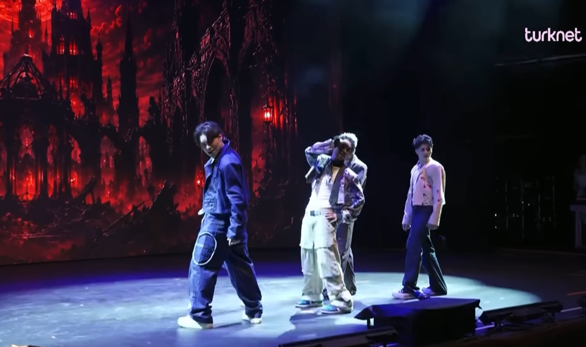
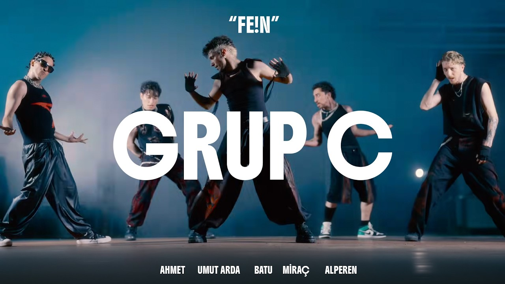
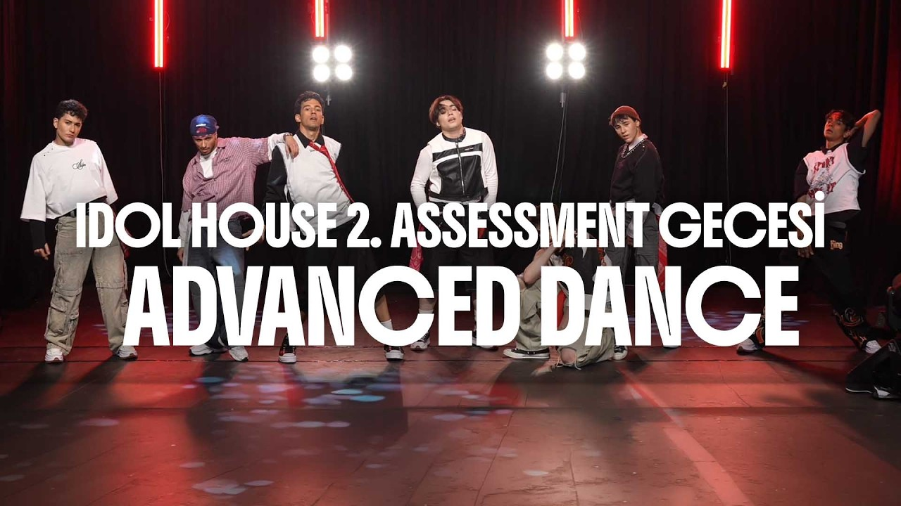
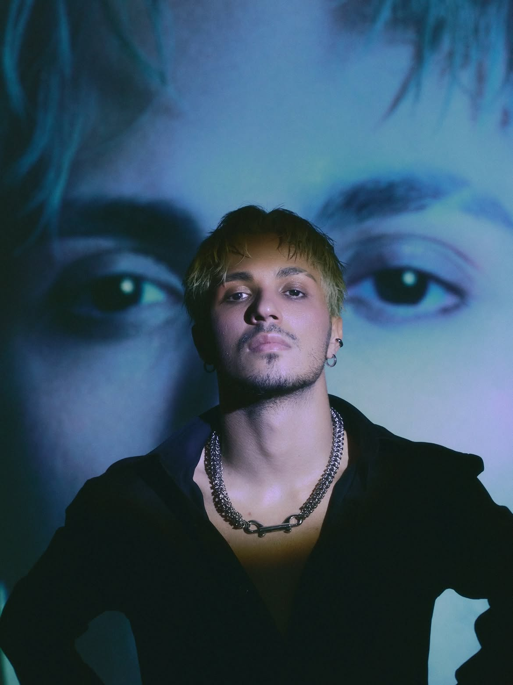
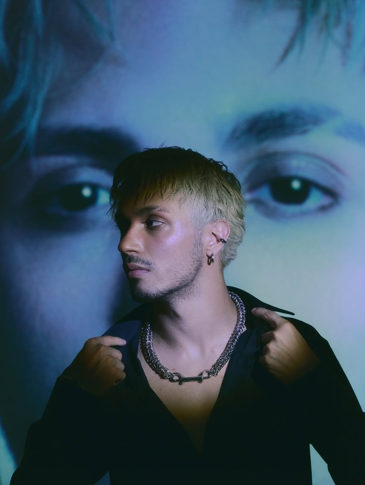
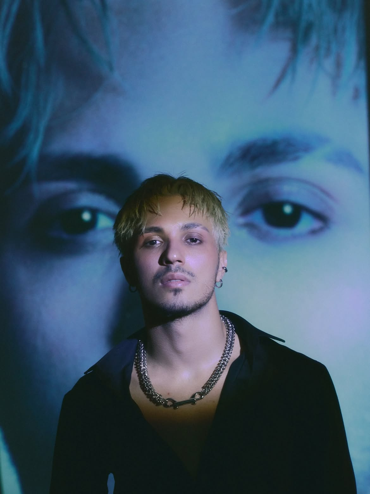
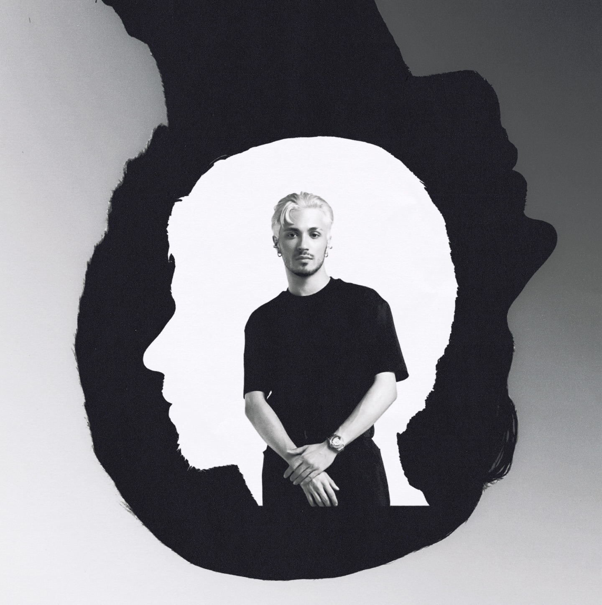

PERFORMANSLAR

▶
Çakkıdı

▶
Dudak (Final)

▶
Dracula

▶
Dracula (Final)

▶
FE!N

▶
12 Haziran 2001’de doğan Batu Cengiz, 5 yıldır dans ediyor ve son 2 yıldır profesyonel olarak dans kariyerini sürdürüyor. Çakal, Edis ve Manifest gibi sanatçıların sahne performanslarında arka dansçı olarak yer aldı. Idol House auditionlarında dansta Upper Intermediate, vokalde ise Beginner sınıfına seçildi. Bir ay sonra yapılan assessmentta dansta Advance seviyesine yükseldi. 5 Temmuz 2026’da gerçekleşen finalde gruba 5. sıradan seçilerek CRUSH’ın üyelerinden biri oldu.






